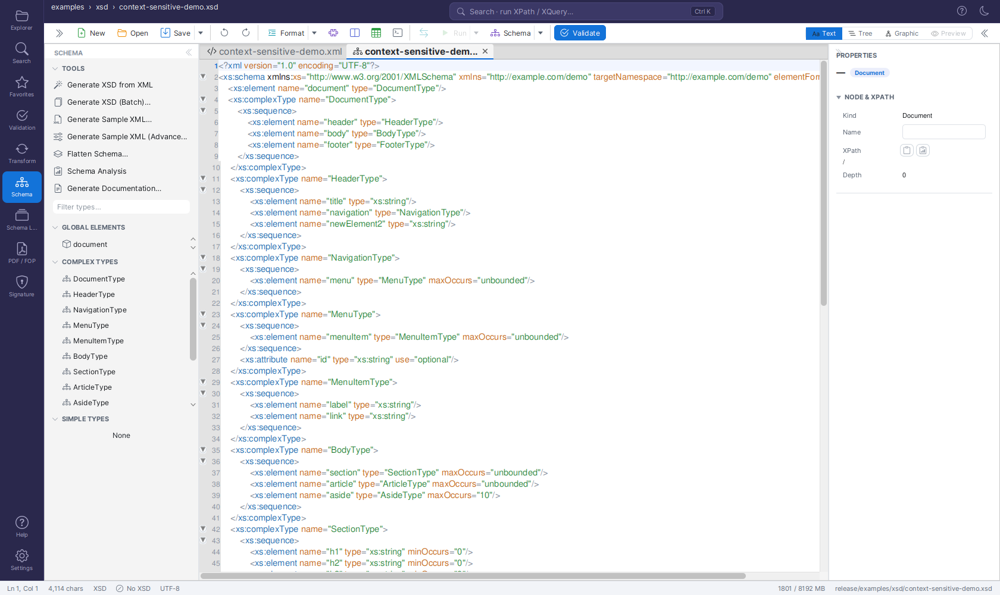
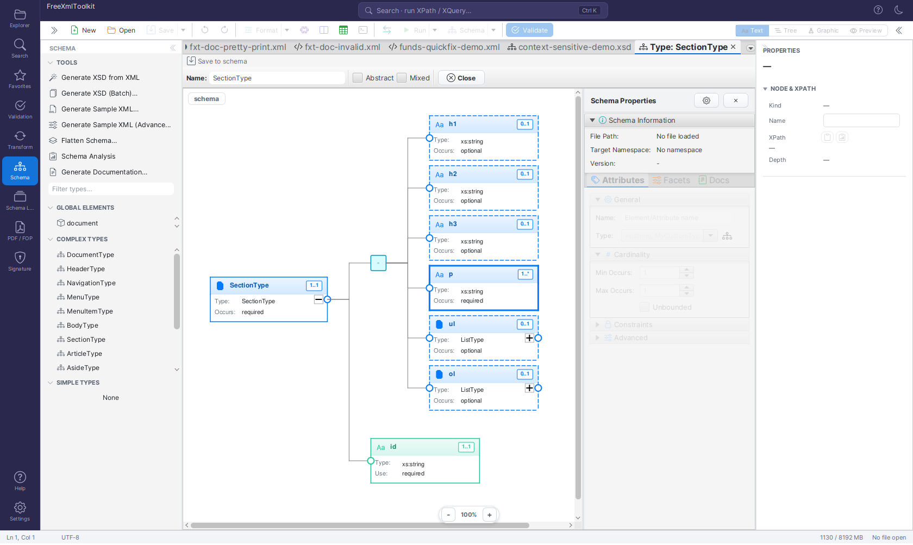
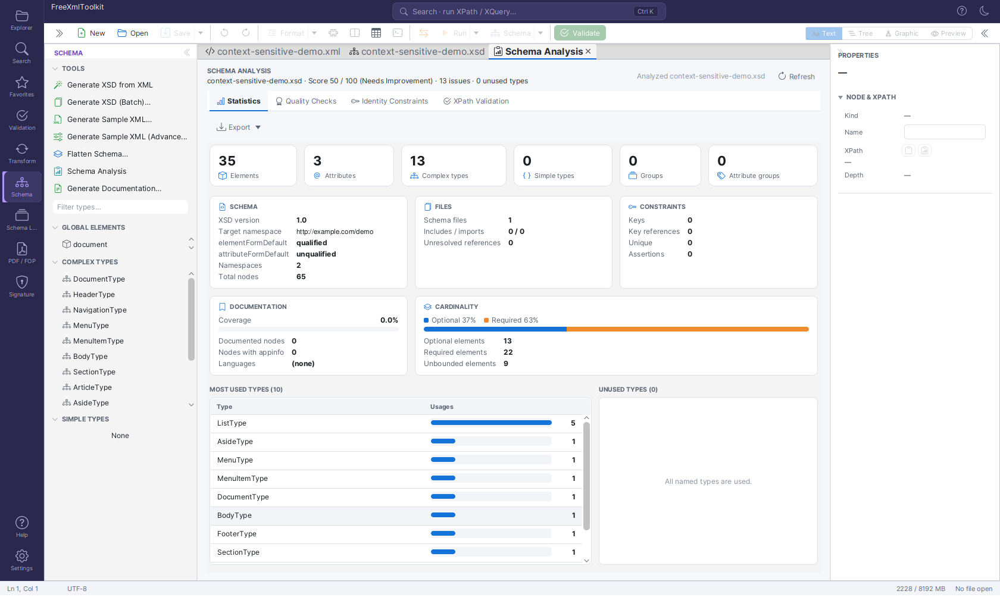
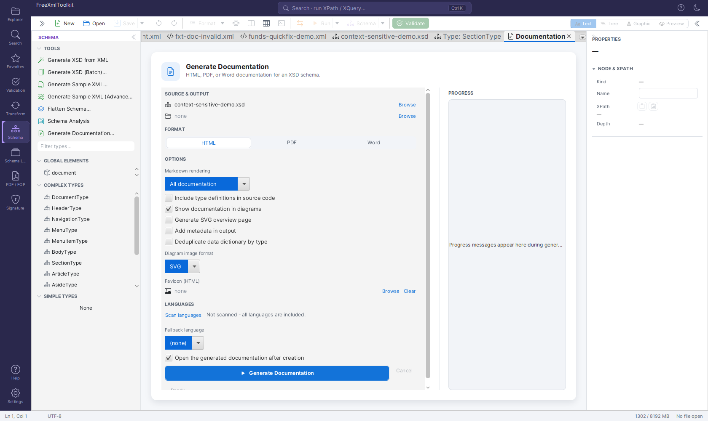
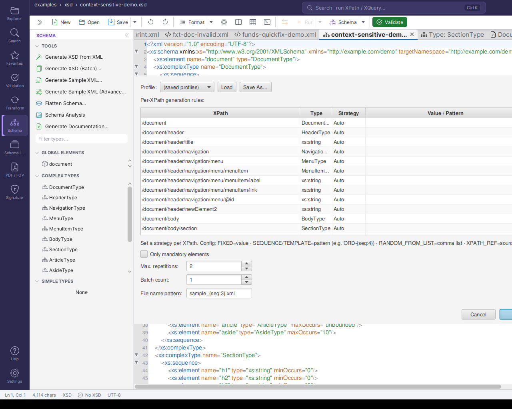
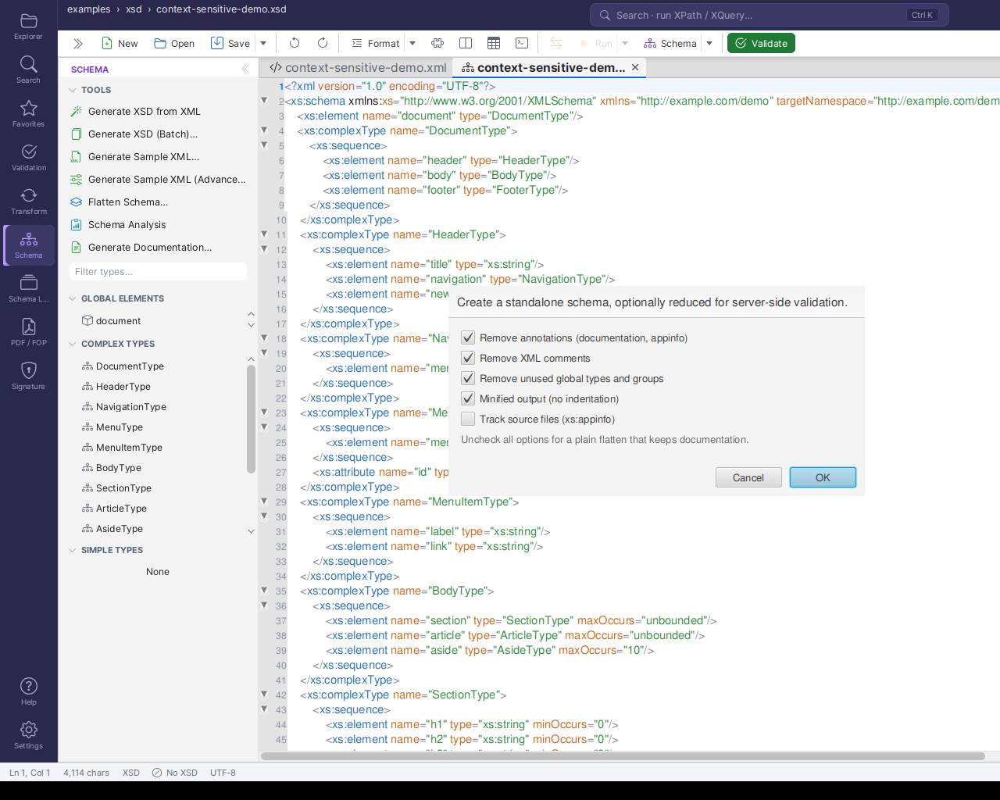

XSD Tools¶
Version: 2.0.1
Note: The standalone XSD Editor tab has been retired. XSD editing — the Text/Tree/Graphic views, the inspector, the Type Library, type editing, documentation generation, schema flattening and schema analysis — now lives in the Unified Shell (open an
.xsdfile; "go to schema definition" from the XML editor opens the schema's graphic view at the element). The capabilities below are unchanged; they are reached through the shell rather than a dedicated sidebar tab.
This part of the application provides tools for working with XML Schemas (XSD). These tools help you understand, document, and use XSD files effectively.
Overview¶
When you open an .xsd file in the Unified Shell, the editor host and the
Schema activity provide several capabilities, each with a specific purpose:
| Capability | Description |
|---|---|
| Graphic View | Visual schema editor with interactive tree |
| Type Library | Browse and analyze all types in your schema |
| Type Editor | Edit ComplexTypes and SimpleTypes graphically |
| Text View | Raw XSD source code editor |
| Schema Analysis | Statistics, constraints, validation, and quality checks |
| Documentation | Generate HTML, Word, or PDF documentation |
| Preview | Preview generated documentation |
| Generate Example Data | Create sample XML from schema with customizable rules and profiles |
| Flatten Schema | Merge includes into one standalone file, with optional reduction for server-side validation |
1. Graphic View¶
The Graphic View lets you explore and edit your schemas visually.
 An XSD open in the Unified Shell's Graphic view, with the Schema activity panel on the left
An XSD open in the Unified Shell's Graphic view, with the Schema activity panel on the left
Features¶
- Visual Tree: See your XSD as an interactive, hierarchical tree
- Easy Navigation: Click on elements to explore their structure
- Edit Documentation: Add or edit documentation for schema elements using the inline tab-based editor (no modal dialogs)
- Add Examples: Include example values for elements
- Drag & Drop: Reorganize elements by dragging them
- Full Undo/Redo: Go back and forward through your changes
How to Use¶
- Open your XSD file in the editor host and switch to the Graphic view
- The schema appears as an interactive tree
- Select an element by clicking on it
- Edit properties in the panel on the right (name, type, cardinality/occurrence, use, form, constraints, documentation, and facets)
- Add children using the context menu (right-click)
- Drag elements to move them
Editing properties from any view: The same Properties pane is available in the Text view as well as the Graphic and Tree views. See Editing Schema Properties from Any View below.
Tips¶
- Double-click an element to edit its name
- Right-click for a context menu with common actions
- Ctrl+Z to undo, Ctrl+Y to redo
- Ctrl+S to save (a backup is created automatically)
- The toolbar's Save ▾ split button saves the schema; its arrow menu offers Save As… (save under a new name) and Save All (saves every open tab)
Automatic Download of Imported Schemas¶
Some schemas import other schemas that are not shipped alongside them. For example, many financial schemas contain:
<xs:import namespace="http://www.w3.org/2000/09/xmldsig#"
schemaLocation="xmldsig-core-schema.xsd"/>
If xmldsig-core-schema.xsd is not in the same folder as your schema, FreeXmlToolkit now
resolves the import automatically:
- It looks for a previously downloaded copy in the local schema cache - if found, the schema loads without any network access.
- Otherwise it fetches the schema from the import's namespace URL (following redirects, using your proxy settings) - this is how the W3C hosts the XML signature schema, for instance.
- The downloaded content is verified to be a real XML Schema, then stored in the cache
(
~/.freeXmlToolkit/cache/schemas/) so future loads work offline.
A few things to know:
- Only imports whose namespace is an
http://orhttps://URL are looked up. xs:includereferences are not affected - included files must still be available at their given location.- Internal and private network addresses are never contacted - see Security Features.
- Clearing the cache folder (Settings → Temp & Cache) is safe: missing schemas are simply re-downloaded the next time they are needed.
- Advanced: to turn the lookup off entirely (for example in fully offline environments),
start the application with the system property
-Dfxt.schema.namespaceFallback=false.
2. Type Library¶
The Schema activity's side panel is your type library: it lists the active schema's top-level declarations so you can browse, find, and open every type in the schema.

The Schema activity's Type Library, with the schema diagram in the editor hostFeatures¶
| Feature | Description |
|---|---|
| Grouped lists | Declarations grouped into GLOBAL ELEMENTS, COMPLEX TYPES, and SIMPLE TYPES (collapsible sections) |
| Filter | A filter field on top narrows all three lists by name as you type |
| Reveal in Tree | Click a declaration to reveal it in the schema's Tree view |
| Open Type Editor | Double-click a type to open it in its own Type Editor tab |
| Find Usage | Right-click a type to find the places where it is used |
| Schema tools | A strip of icon buttons above the filter: Generate XSD from XML (single/batch), Generate Sample XML (plain/advanced), Flatten Schema, Statistics, Schema Quality, and Generate Documentation - hover a button for its name |
How to Use¶
- Open your XSD file
- Open the Schema activity from the activity bar
- Browse the grouped lists, or type in the filter field to narrow them
- Click a declaration to reveal it in the Tree view
- Double-click a type - or right-click and choose Open Type Editor - to edit it; right-click also offers Reveal in Tree and Find Usage
Tip
The whole panel is a drop zone: drop an .xsd file from your file manager anywhere on
it to open that schema as a document.
3. Type Editor¶
The Type Editor provides dedicated editing for ComplexTypes and SimpleTypes.

A named type opened in its own Type Editor tab in the editor areaFeatures¶
| Feature | Description |
|---|---|
| Tab-Based Editing | Each type opens in its own tab in the editor area |
| ComplexType Editor | Graphical editing with element tree |
| SimpleType Editor | Form-based editing with facet panels |
ComplexType Editor¶
For ComplexTypes, you get a graphical editor similar to the main schema view:
- Type name appears as the root node
- Add, delete, modify elements graphically
- Supports Sequence, Choice, and All compositors
- Save/Discard with dirty tracking
SimpleType Editor¶
For SimpleTypes, you get a 5-panel form editor:
| Panel | Description |
|---|---|
| General | Name and Final attribute |
| Restriction | Base type and facets |
| List | ItemType selection |
| Union | MemberTypes management |
| Annotation | Documentation and AppInfo |
How to Use¶
- In the Schema panel's Type Library, find the type (use the filter field for large schemas)
- Double-click it - or right-click and choose Open Type Editor. Alternatively, pick Type Editor… from the editor toolbar's Schema ▾ menu and choose a type by name.
- The type opens in its own Type Editor tab in the editor area
- Make your changes
- Click Save or use Ctrl+S
4. Text View¶
The Text View provides raw XSD source code editing.
The XSD in the Unified Shell's Text view (Schema activity panel on the left, inspector on the right)
Features¶
- Full Code Editor: View and edit the raw XSD source code
- Syntax Highlighting: Color-coded code for easy reading
- Search and Replace: Find and change text quickly
- Query Console: Query the schema with XPath/XQuery (Ctrl+Shift+X)
- Save as Favorite: Quick access to frequently used schemas
- Editable Properties pane: Move the text caret into a schema construct to select it and edit its properties without leaving the text editor (see below)
Editing Schema Properties from Any View¶
You can edit a schema node's properties directly from the Text view, the same way as in the Tree and Graphic views.
The XSD editor has three views - Text, Tree, and Graphic - and all three share one in-memory schema model. The Properties pane works in every view:
- Tree and Graphic views: Select a node to edit its name, type, cardinality/occurrence, use, form, constraints, documentation, and facets.
- Text view: Move the text caret into an XSD construct - such as an
xs:element,xs:complexType,xs:simpleType,xs:attribute, a compositor (xs:sequence,xs:choice,xs:all), or a facet - and the Properties pane selects the matching schema node and shows it editable. You get the same property editing as in the Tree and Graphic views, without leaving the source editor. Your edits round-trip back into the schema text as a minimal change that preserves your caret and scroll position.
If the caret is not inside a recognizable construct - for example inside an xs:annotation, a
comment, or blank space - the pane falls back to a read-only caret/XPath view.
Because all three views share one model, your edits and your Undo/Redo history are preserved when you switch between Text, Tree, and Graphic.
What You Can Edit in the Properties Pane¶
For the selected schema node you can edit:
- Name, type, cardinality/occurrence, use, form - The core properties of the node.
- Facets - Add, edit, and remove facets such as patterns, enumerations, and length limits.
- App info (
xs:appinfo) - The machine-readable metadata attached to the node (for example the technical tags described in Documentation Generator). - Multi-language documentation (
xs:documentation) - One row per language. Use Add language to add a translation and the ✕ button to remove one. - Comments - Select an XSD comment in the tree to edit its text. To add a comment, choose Add Comment… from a node's right-click context menu.
- Constraints - In the CONSTRAINTS section, select a
key,keyref,unique, orassertconstraint and click Delete constraint to remove it.
Note: Structural editing (adding, deleting, and moving nodes) remains a Tree and Graphic capability via the right-click context menu. The Text view provides property editing through the Properties pane.
5. Schema Analysis¶
Two tool buttons in the Schema activity's side panel analyze the active XSD. Each opens its result as a report tab in the editor area, so you can read, compare, or save it like any other document.

Schema statistics open as a report tab from the Schema activity's Statistics actionStatistics¶
The Statistics button produces a report with schema metrics at a glance:
| Metric | Description |
|---|---|
| XSD Version | 1.0 or 1.1 features detected |
| Element Count | Total number of elements |
| Attribute Count | Total attributes defined |
| Type Count | Number of SimpleTypes and ComplexTypes |
| Group Count | Model groups and attribute groups |
| Includes / Imports | How many schema files are pulled in |
| Constraints | Counts of xs:key, xs:keyref, xs:unique, and assertions |
| Cardinality | Optional, required, and unbounded elements |
| Documentation Coverage | Percentage of documented nodes |
| Unused Types | Named types that are never referenced (listed by name) |
Quality Checks¶
The Schema Quality button runs automated quality checks and reports a score plus a list of issues:
| Check | Description |
|---|---|
| Naming Conventions | Consistent element/type naming |
| Documentation Coverage | Percentage of documented elements |
| Unused Types | Types defined but never used |
| Circular References | Detect circular type references |
| Best Practices | Common XSD best practices |
Note
Identity constraints (xs:key, xs:keyref, xs:unique, xs:assert) can also be
inspected and deleted per node in the Properties inspector's CONSTRAINTS section -
see What You Can Edit in the Properties Pane.
6. Documentation Generator¶
Create professional documentation from your XSD file automatically.

The Documentation generator open as a tab in the editor area, with source, format, and optionsOutput Formats¶
| Format | Description |
|---|---|
| HTML | Interactive web documentation with navigation |
| Word | Microsoft Word (.docx) document |
| PDF document using Apache FOP |
How to Generate Documentation¶
- Open your XSD file in the editor host
- Click Generate Documentation… in the Schema panel's tool strip (or pick it from the editor toolbar's Schema ▾ menu) - the generator opens as a tab in the editor area
- Check SOURCE & OUTPUT: the active schema is pre-filled; choose the output folder (HTML) or file (PDF/Word)
- Select your output format (HTML, PDF, or Word) and the diagram format (SVG, PNG, or JPG)
- Configure options (PDF and Word add page-layout and content options)
- Click Generate - the PROGRESS log streams the pipeline's messages live, and the run can be cancelled
- Open the result automatically or from the output location
Tip
Generation works from the schema's last-saved version on disk so that relative
xs:include / xs:import references resolve correctly - save the XSD first to document
your latest edits.
Generation Options¶
| Option | Description |
|---|---|
| Image Format | Choose PNG or SVG for diagrams |
| Use Markdown Renderer | Render Markdown formatting in documentation |
| Open file after creation | Automatically open the generated file |
| Create example data if missing | Generate sample values |
| Include type definitions | Show type source code |
| Generate SVG overview page | Interactive full-schema SVG |
Language Settings¶
For multi-language schemas, you can:
- Click Scan Languages to detect available languages
- Select which languages to include
- Choose a fallback language for missing translations
- Use "Select All" or "Deselect All" for quick selection
Adding Technical Notes to Your Schema¶
You can add structured technical information directly in your XSD files:
Supported tags:
@since- When a feature was introduced@see- References to other elements@deprecated- Mark elements as deprecated{@link /path/to/element}- Create clickable links
Example in your XSD:
<xs:element name="Transaction">
<xs:annotation>
<!-- User-friendly documentation -->
<xs:documentation>
Represents a single financial transaction.
</xs:documentation>
<!-- Technical notes for developers -->
<xs:appinfo source="@since 4.0.0"/>
<xs:appinfo source="@see {@link /FundsXML4/ControlData}"/>
<xs:appinfo source="@deprecated Use NewTransaction instead."/>
</xs:annotation>
</xs:element>
7. Sample XML Generator¶
Create sample XML files based on your XSD schema. This is useful for testing, data migration, or as a starting template.

The advanced sample generator dialog with its per-XPath rules tableUnified Shell: In the Unified Shell, sample-data generation lives in the Schema panel. It offers two actions: Generate Sample XML for the basic generation described below, and Generate Sample XML (Advanced)… for the rule-based, batch-capable generation shown above.
Quick Start (Basic Generation)¶
For simple use cases, you can generate sample XML in seconds:
- Load your XSD file
- Open the Schema panel from the activity bar and click Generate Sample XML
- Choose your options:
- Mandatory Only: Include only required elements
- Max Occurrences: Limit repeating elements
- Click Generate
- Validate the generated XML against the schema
- Save or copy the generated XML
Profiled Generation (Advanced)¶
For more control, you can define rules that specify exactly how each element or attribute gets its value. Open it from Generate Sample XML (Advanced)… in the Schema panel. It includes:
| Feature | Description |
|---|---|
| XPath-Based Rules | Set a generation strategy for each element or attribute by its XPath |
| 11 Strategies | Auto, Fixed Value, Omit, Empty, XSD Example, Enum Cycle, Sequence, XPath Reference, Random from List, Template, and Null |
| Auto-Fill XPaths | Automatically extract all XPaths from your schema to populate the rules table |
| Saveable Profiles | Save your generation configuration and reload it later |
| Profile Sharing | Export and import profiles to share with colleagues |
| Batch Generation | Generate multiple files at once with configurable file naming (for example, order_001.xml, order_002.xml) |
For a complete guide with step-by-step instructions and examples, see Profiled XML Generation.
Validation¶
The generated sample opens as a normal editor tab (Sample.xml), so you can validate it
like any other document:
- Bind the schema if it is not picked up automatically (Validation panel → SOURCES, or the status bar's XSD indicator)
- Click Validate (F8)
- Problems appear in the PROBLEMS list - click one to jump to its line
8. XSD Flattener¶
Combine multiple XSD files into a single, standalone file. Useful when your schema is split across several files via <xs:include>, or when you want a minimal schema for a validation server.

The Flatten Schema options dialog over an open schema — all reductions enabled by defaultHow to Use¶
- Open your main XSD file in the editor
- In the Schema activity's side panel, click the Flatten Schema… tool button
- The Flatten Schema options dialog opens — pick which reductions you want (see below)
- Click OK
- The flattened schema opens as a new editor tab (
Flattened.xsd), ready for you to review and save
Flatten Options¶
Before flattening, a dialog lets you reduce the output. All four options are checked by default, which produces the smallest possible schema — ideal for deploying to a validation server:
| Option | What it does |
|---|---|
| Remove annotations (documentation, appinfo) | Strips all xs:documentation and xs:appinfo content — the human-readable descriptions a validator does not need |
| Remove XML comments | Strips all XML comments, including comments at the top of the file |
| Remove unused global types and groups | Removes global types, groups and attribute groups that are not reachable from any global element or attribute — dead weight in large schema libraries. (Skipped automatically if the schema uses xs:redefine or xs:override.) |
| Minified output (no indentation) | Collapses the whitespace between tags for the smallest file size |
Uncheck all four options for a plain flatten that keeps documentation, comments and formatting — the previous behavior.
The reduced schema is verified to still compile as a valid schema before it is shown, so you can deploy it with confidence.
What Happens to Includes and Imports¶
xs:include— Included schemas (same namespace) are merged into the output, and the resolved include directives are removed: the flattened schema is standalone. If an include cannot be resolved, its directive is kept in the output so you can see what is missing.xs:import— Imported schemas (different namespaces) are not merged; the import declarations stay untouched.
When saving schemas from the graphical editor, xs:include and xs:import declarations are preserved. The flattener only merges included content when you explicitly flatten — it does not alter your original schema structure.
When to Use¶
- Deploying a minimal, resource-efficient schema to a validation server
- Distributing schemas to partners
- Tools that don't support includes
- Simplifying complex schema sets
- Creating self-contained schemas
Supported XSD Features¶
| Category | Features |
|---|---|
| Elements | Elements, Attributes, Groups |
| Types | ComplexTypes, SimpleTypes |
| Compositors | Sequence, Choice, All |
| Constraints | Patterns, Enumerations, Length limits |
| References | Import, Include, Redefine |
| XSD 1.1 | Assertions, Alternatives, Open Content |
| Identity | Key, KeyRef, Unique |
Keyboard Shortcuts¶
| Shortcut | Action |
|---|---|
Ctrl+S |
Save file |
Ctrl+Z |
Undo |
Ctrl+Y |
Redo |
Ctrl+F |
Find/Replace |
Ctrl+Shift+X |
Toggle the Query Console |
Ctrl+D |
Add to favorites |
Delete |
Delete selected element |
F2 |
Rename element |
F8 |
Validate schema |
Navigation¶
| Previous | Home | Next |
|---|---|---|
| XML Editor Features | Home | Profiled XML Generation |
All Pages: Unified Shell | XML Editor | XML Features | JSON Editor | XSD Tools | Profiled XML Generation | XSD Validation | XSLT Viewer | XSLT Developer | FOP/PDF | Signatures | IntelliSense | Schematron | FundsXML Extensions | Favorites | Templates | Tech Stack | Security | Licenses